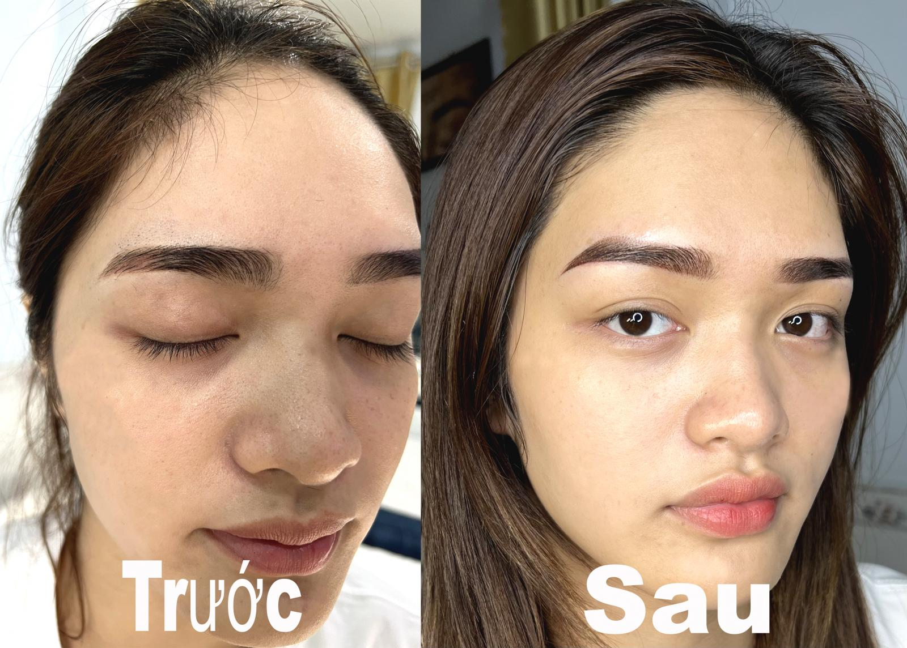
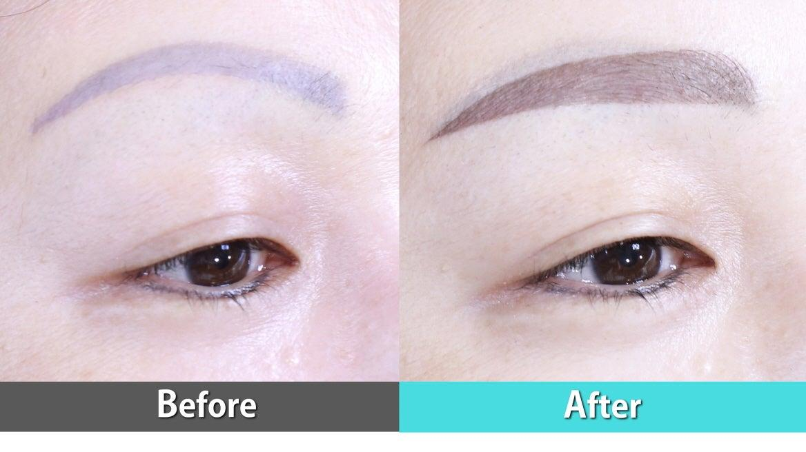
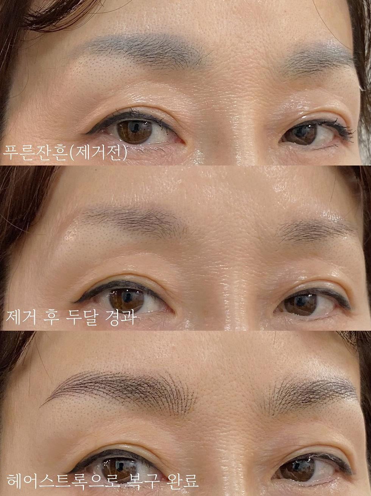

Mày Bị Xanh Sau Nhiều Năm Có Xử Lý Được Không?
Không ít khách hàng sau nhiều năm phun xăm nhận thấy chân mày dần chuyển sang màu xanh xám hoặc xanh đen. Điều này khiến gương mặt trở nên thiếu tự nhiên, thậm chí trông già hơn so với tuổi thật.
Đây là một trong những vấn đề phổ biến ở những người từng phun mày bằng công nghệ cũ hoặc sử dụng mực chất lượng thấp. Tin vui là mày bị xanh hoàn toàn có thể xử lý được nếu đánh giá đúng tình trạng và áp dụng phương pháp phù hợp.
Mày Bị Xanh Là Gì?
Mày bị xanh là hiện tượng màu chân mày sau một thời gian không còn giữ được màu nâu tự nhiên mà chuyển thành xanh xám, xanh đen hoặc xám chì.
Tình trạng này thường xuất hiện sau 3-8 năm, tùy loại mực, kỹ thuật thực hiện và cơ địa từng người.
Vì Sao Chân Mày Bị Xanh?
1. Sử dụng mực kém chất lượng
Đây là nguyên nhân phổ biến nhất. Một số loại mực giá rẻ chứa nhiều sắc tố xanh hoặc đen. Khi các sắc tố khác phai dần, phần màu xanh sẽ lộ rõ hơn.
2. Công nghệ phun xăm cũ
Trước đây nhiều cơ sở sử dụng máy phun đời cũ, kim lớn hoặc mực vô cơ. Sau nhiều năm, màu dễ bị biến đổi và khó giữ được tông nâu tự nhiên.
3. Kỹ thuật đưa mực quá sâu
Nếu mực được đưa xuống quá sâu dưới da, màu sẽ dễ chuyển sang xanh theo thời gian. Đây là lỗi kỹ thuật thường gặp ở những cơ sở thiếu kinh nghiệm.
4. Cơ địa
Một số người có cơ địa giữ sắc tố lạnh lâu hơn, khiến màu xanh xuất hiện rõ hơn sau nhiều năm.
Mày Bị Xanh Có Tự Hết Không?
Câu trả lời là không. Màu có thể nhạt dần theo thời gian nhưng rất hiếm khi tự trở lại màu nâu đẹp như ban đầu. Nếu để quá lâu, việc xử lý thường sẽ mất nhiều thời gian hơn.
Có Những Cách Xử Lý Nào?
Khử màu
Đây là phương pháp được áp dụng khá phổ biến. Kỹ thuật viên sẽ trung hòa sắc tố xanh trước khi thực hiện phun lại màu mới.
Phun phủ màu mới
Nếu nền mày chưa quá đậm, có thể xử lý bằng cách điều chỉnh màu nền và phun phủ màu phù hợp. Việc này giúp chân mày trông tự nhiên hơn.
Kết hợp laser
Trong trường hợp màu quá đậm, đã sửa nhiều lần hoặc nền mực dày, kỹ thuật viên có thể tư vấn laser trước khi phun lại. Không phải trường hợp nào cũng cần laser.



Có Nên Tự Xóa Mày Tại Nhà?
Không nên. Một số sản phẩm quảng cáo có thể làm mờ mực nhưng cũng tiềm ẩn nguy cơ kích ứng da, sẹo hoặc khiến nền mực khó xử lý hơn về sau.
Việc tự xử lý tại nhà thường không mang lại kết quả như mong muốn, đặc biệt với nền mày xanh đậm hoặc từng sửa nhiều lần.
Sau Bao Lâu Có Thể Phun Lại?
Nếu cần khử màu hoặc laser, thời gian chờ thường từ 4-8 tuần để da hồi phục. Kỹ thuật viên sẽ kiểm tra trước khi quyết định thời điểm thực hiện.
Làm Sao Để Tránh Mày Bị Xanh?
Bạn nên chọn cơ sở uy tín, sử dụng mực chất lượng cao, không chạy theo giá quá rẻ, chọn kỹ thuật viên có kinh nghiệm và dặm màu đúng thời điểm nếu cần.
Đầu tư ngay từ lần đầu sẽ giúp hạn chế nhiều rủi ro về sau, đặc biệt là tình trạng đổi màu sang xanh xám hoặc xanh đen.
Khi Nào Nên Sửa Mày?
Bạn nên đến cơ sở phun xăm nếu màu chuyển xanh rõ rệt, màu không đều, muốn thay đổi dáng mày hoặc muốn đổi sang màu tự nhiên hơn. Việc xử lý sớm sẽ giúp quá trình chỉnh sửa nhẹ nhàng hơn.
Checklist Trước Khi Sửa Mày
✅ Không tự dùng thuốc xóa mực.
✅ Không tự phun chồng màu tại nhà.
✅ Chọn cơ sở có kinh nghiệm xử lý mày cũ.
✅ Chụp ảnh chân mày hiện tại để được tư vấn.
Câu Hỏi Thường Gặp
Có. Phần lớn trường hợp đều có thể xử lý bằng khử màu, phun phủ hoặc kết hợp laser.
Không phải lúc nào cũng cần. Tùy nền mực và tình trạng thực tế, kỹ thuật viên sẽ đưa ra phương án phù hợp.
Hiện nay quá trình thực hiện thường được ủ tê trước nên cảm giác khá nhẹ.
Nếu sử dụng mực chất lượng và chăm sóc đúng cách, màu có thể duy trì đẹp trong nhiều năm.
Kết Luận
Mày bị xanh sau nhiều năm là tình trạng khá phổ biến nhưng hoàn toàn có thể xử lý nếu được đánh giá đúng và thực hiện bởi kỹ thuật viên có kinh nghiệm. Đừng cố che màu hoặc tự xử lý tại nhà vì có thể khiến việc sửa sau này trở nên khó khăn hơn.